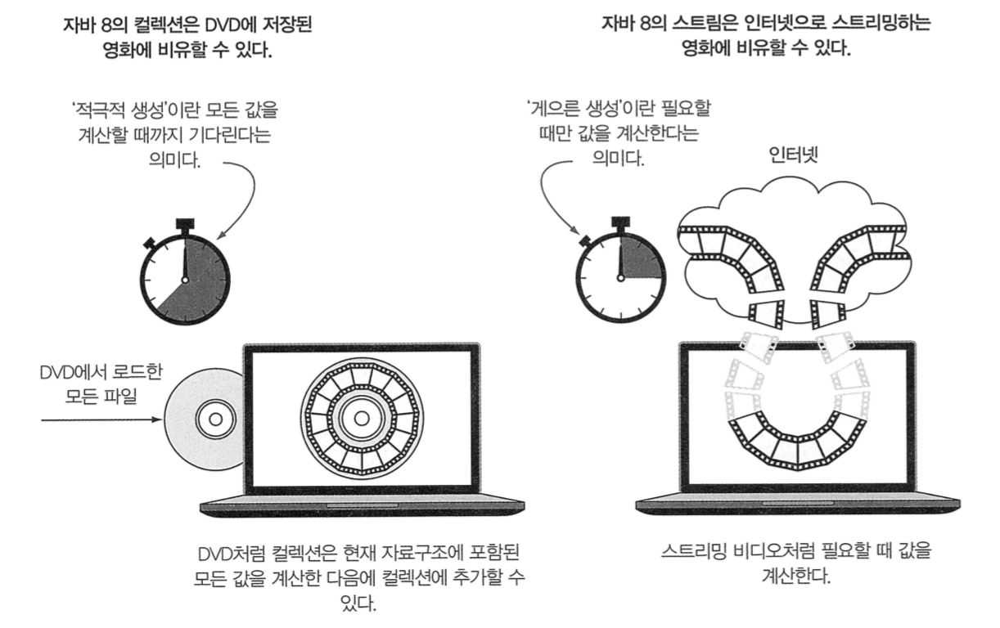

스트림(Stream) 소개
Java8에서 새로 추가된 스트림의 기초를 정리합니다.
Table of Contents
스트림이란?
스트림이란 데이터 처리 연산을 지원하도록 소스에서 추출된 연속된 요소 로 정의할 수 있다.
스트림을 사용하면 선언형(즉, 데이터를 처리하는 임시코드 대신 질의로 표현)으로 컬렉션 데이터를 처리할 수 있다.
따라서 데이터 컬렉션 반복을 멋지게 처리할 수 있으며, 별도의 멀티 스레드 코드를 구현하지 않더라도 데이터를 병렬로 처리할 수 있게 된다.
다음은 저칼로리의 요리명을 반환하고, 칼로리를 기준으로 정렬하는 로직을 Java7과 Java8로 비교하는 예시이다.
1 | // Java7 |
위 예시를 통해 스트림이 소프트웨어 공학적으로 제공하는 이점을 확인할 수 있다. :
- 선언형
- 즉, 루프와 if 조건문 등의 제어 블록으로 어떻게 동작을 구현할지 지정하기 보다 원하는 동작의 수행을 직접적으로 지정할 수 있게 된다.
- 코드가 더 간결하고 가독성이 좋아진다.
- 조립할 수 있음
- 여러 빌딩 블록 연산(filter, sorted, map, collect)을 연결해서 복잡한 데이터 처리 파이프라인을 만들 수 있다.
- 유연성이 좋아진다.
- 병렬화
- 성능이 좋아진다.
- filter, sorted, map, collect 와 같은 연산은 고수준 빌딩 블록(High-Level Building Block) 으로 이루어져 있으므로 특정 스레드 모델에 제한되지 않는다. 따라서 병렬로 데이터 처리를 하면서 스레드와 락을 걱정할 필요가 없다.
스트림 vs. 컬렉션

데이터를 언제 계산하는가?
- 컬렉션
- 현재 자료구조가 포함하는 모든 값을 메모리에 저장.
즉, 컬렉션의 모든 요소는 컬렉션에 추가하기 전에 계산되야 한다. - 생산자 중심(Supplier-Driven). 즉, 팔기도 전에 창고를 가득 채우며 적극적으로 생산 한다.
- 현재 자료구조가 포함하는 모든 값을 메모리에 저장.
- 스트림
- 요청할 때만 요소를 계산하는 고정된 자료구조.
따라서 스트림에 요소를 추가/삭제가 불가하다. - 사용자가 요청하는 값만 스트림에서 추출.
생산자(Producer)와 소비자(Consumer) 관계. - 게으르게 만들어지는 컬렉션과 같다.
즉, 사용자가 데이터를 요청할 때만 값을 계산한다. (요청 중심 제조(Demand-Driven Manufacturing) or 즉석 제조(Just-In-Time Manufacturing))
- 요청할 때만 요소를 계산하는 고정된 자료구조.
데이터 소스를 반복 사용할 수 있는가?
- 컬렉션
- 데이터를 반복해서 사용 할 수 있다.
- 스트림
- 데이터를 단 한번만 소비할 수 있다.
외부반복과 내부반복
- 컬렉션 : 외부반복 (External Iteration)
- 스트림 : 내부반복 (Internal Iteration)
스트림은 내부반복을 통해 작업을 투명하게, 그리고 하드웨어를 활용한 병렬설 구현을 자동으로 하거나, 최적화된 다양한 순서로 처리할 수 있게 해준다.
1 | // 컬렉션 : for-each 루프를 이용하는 외부반복 |
스트림 연산
1 | List<String> names = menu.stream() // 스트림 리스트 얻기 |
스트림 파이프라인은 빌더 패턴(Builder Pattern)과 비슷하다.
위 예제 코드를 보면 알 수 있듯이 스트림의 연산은 크게 2가지로 구분할 수 있다.
- 중간 연산 (Intermediate Operation)
- filter, map, limit 는 서로 연결되여 파이프라인을 형성.
- 중간 연산은 다른 스트림을 반환한다. 따라서 서로 다른 여러 중간 연산을 연결/병합해서 질의를 만들 수 있다. (Loop Fusion)
- 중간 연산 만으로는 결과를 생성할 순 없다. (최종 연산 필요)
- filter, map, limit, sorted, distinct…
- 최종 연산 (Terminal Operation)
- collect 로 파이프라인을 실행한 후 종료.
즉, 스트림 파이프라인에서 결과를 도출하여 List, Integer, void 등의 결과로 반환한다. - forEach, count, collect…
- collect 로 파이프라인을 실행한 후 종료.